CausalPy and Quasi-Experimental Designs
Data Science @ Personio
and Open Source Contributor @ PyMC
10/7/24
Causal inference in practice needs to be credible. Decision makers will demand it. Your inferential strategies need to be transparent and defensible.
This is where you should leverage CausalPy and Bayesian causal modelling for the quantification of uncertainty
Where do we get to if everyone does the minimum? An eye for an eye will leave everyone blind.
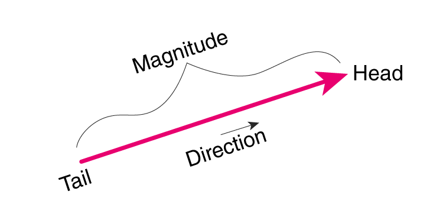
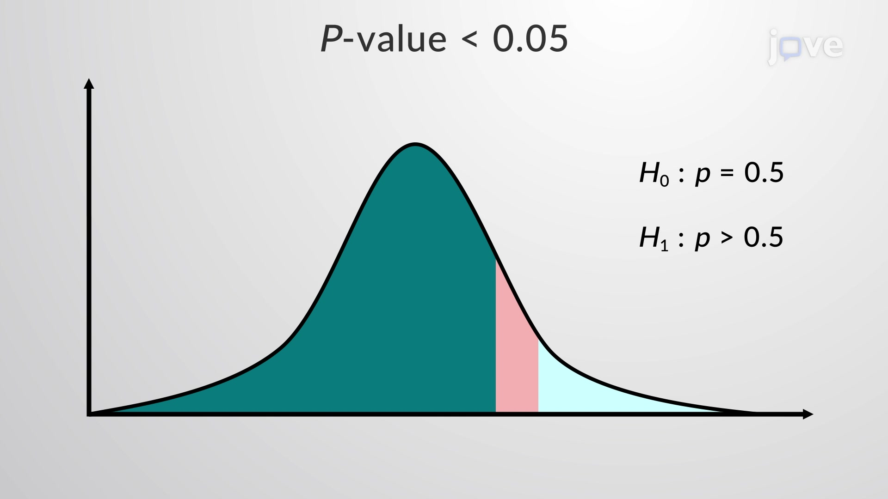
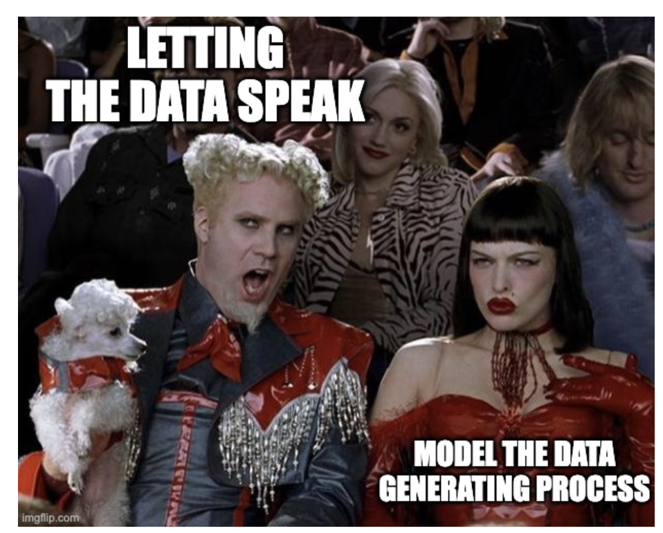
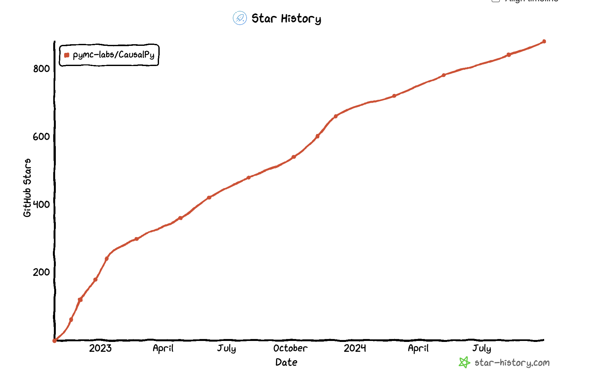
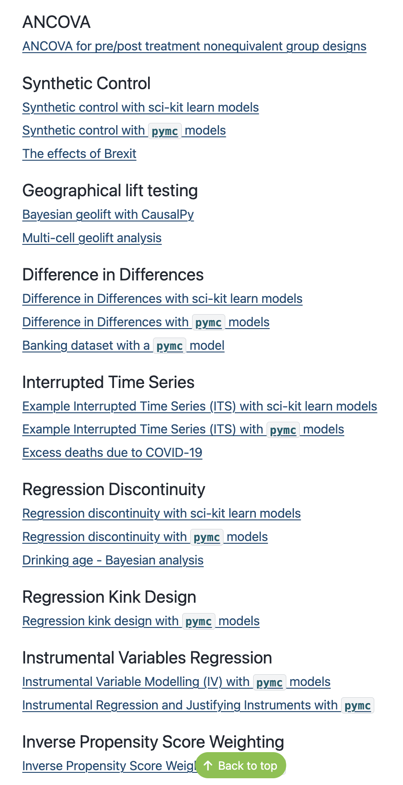
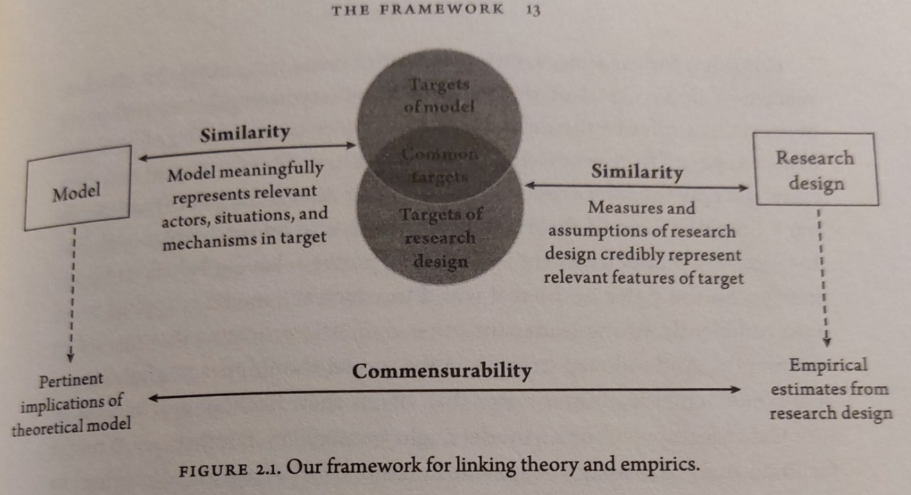 Causal question(s) of import can be interrogated just when we can pair a research design with an appropriate statistical model.
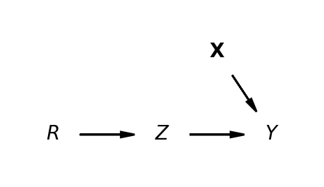 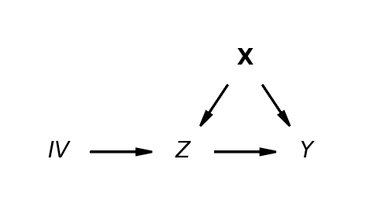
The treatment effect can be estimated cleanly \[ y \sim 1 + Z \]
The treatment effect has to be estimated so as to avoid the bias due to X \[ y \sim 1 + \widehat{Z} \] \[ \hat{Z} \sim 1 + IV \]
N = 100
e1 = np.random.normal(0, 3, N)
e2 = np.random.normal(0, 1, N)
Z = np.random.uniform(0, 1, N)
## Ensure the endogeneity of the the treatment variable
X = -1 + 4 * Z + e2 + 2 * e1
y = 2 + 3 * X + 3 * e1
test_data = pd.DataFrame({"y": y, "X": X, "Z": Z})
sample_kwargs = {
"tune": 1000,
"draws": 2000,
"chains": 4,
"cores": 4,
"target_accept": 0.99,
}
instruments_formula = "X ~ 1 + Z"
formula = "y ~ 1 + X"
instruments_data = test_data[["X", "Z"]]
data = test_data[["y", "X"]]
iv = InstrumentalVariable(
instruments_data=instruments_data,
data=data,
instruments_formula=instruments_formula,
formula=formula,
model=InstrumentalVariableRegression(sample_kwargs=sample_kwargs),
)\[\begin{align*} \left( \begin{array}{cc} Y \\ Z \end{array} \right) & \sim \text{MultiNormal}(\color{green} \mu, \color{purple} \Sigma) \\ \color{green} \mu & = \left( \begin{array}{cc} \mu_{y} \\ \mu_{z} \end{array} \right) = \left( \begin{array}{cc} \beta_{00} + \color{blue} \beta_{01}Z ... \\ \beta_{10} + \beta_{11}IV ... \end{array} \right) \end{align*} \]
The treatment effect \(\color{blue}\beta_{01}\) of is the primary quantity of interest
\[ \color{purple} \Sigma = \begin{bmatrix} 1 & \color{blue} \sigma \\ \color{blue} \sigma & 1 \end{bmatrix} \]
The Bayesian estimation strategy incorporates two structural equations and the success of the IV model relies of the correlation between terms.
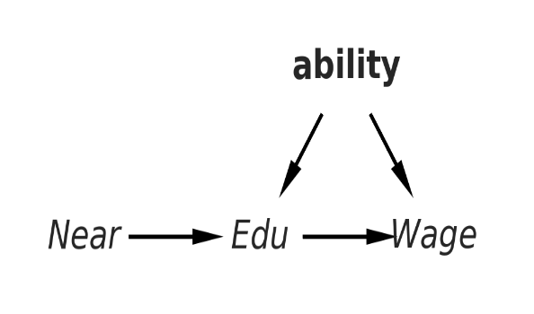
Recipe of Assumptions:
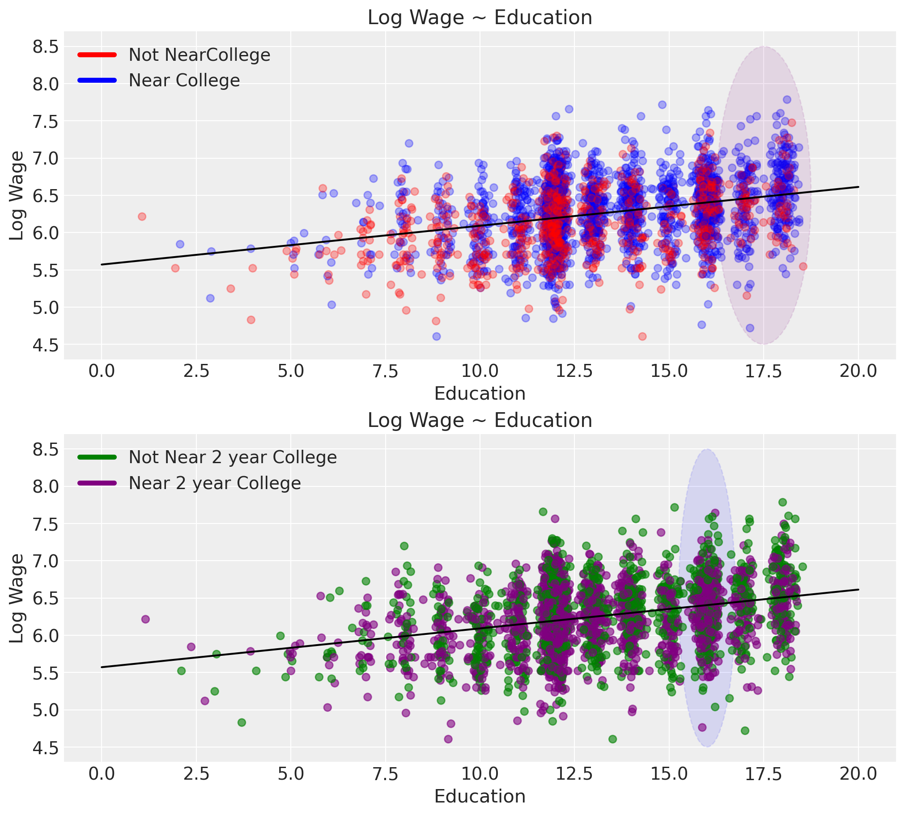
We want to argue for:
the relevance of our instrument i.e. that it has a non-trivial impact on the outcome of interest
that it influences the result only via the treatment condition.
evaluating multiple instrument candidates
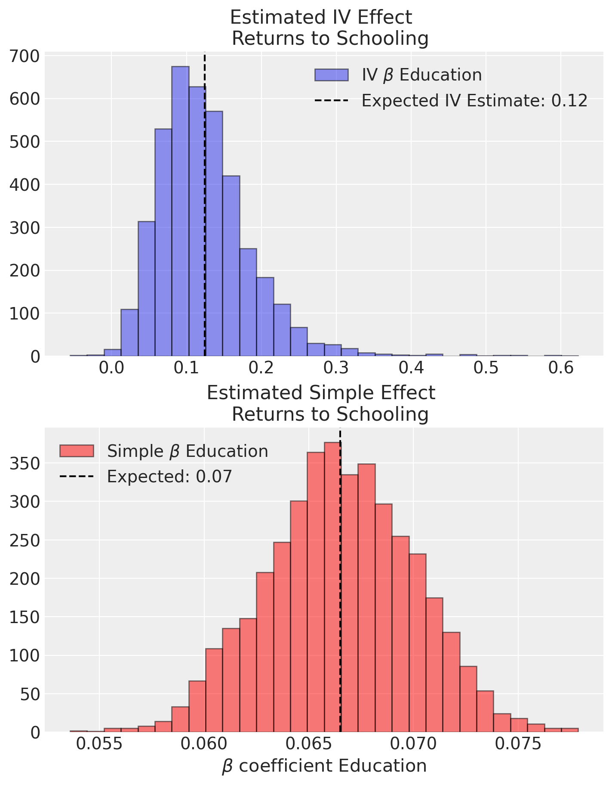
The natural comparison with OLS shows:
evidence of genuine confounding in the estimates of treatment effect
Crucially it highlights the false precision in the OLS estimate.
Model comparison is at the heart of understanding confounding in causal infernece.
IV models may be compared by structure but also by instruments used.
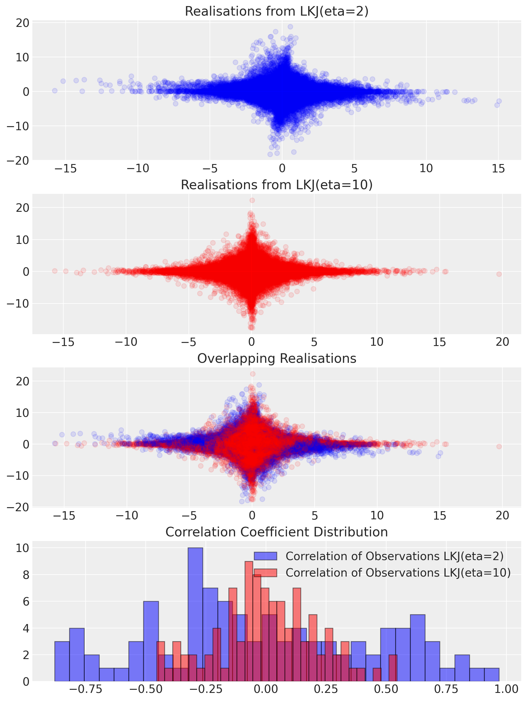
The strength of an instrument is determined by the correlation structure between instrument and outcome via the treatment solely:
F-tests can be used to assess how the instrument relates to the outcome.
In the Bayesian setting we can directly estimate the correlation structure and apply sensitivity tests.
Stronger priors on correlation strength influence the outcomes and can be evaluated against the data through posterior predictive checks
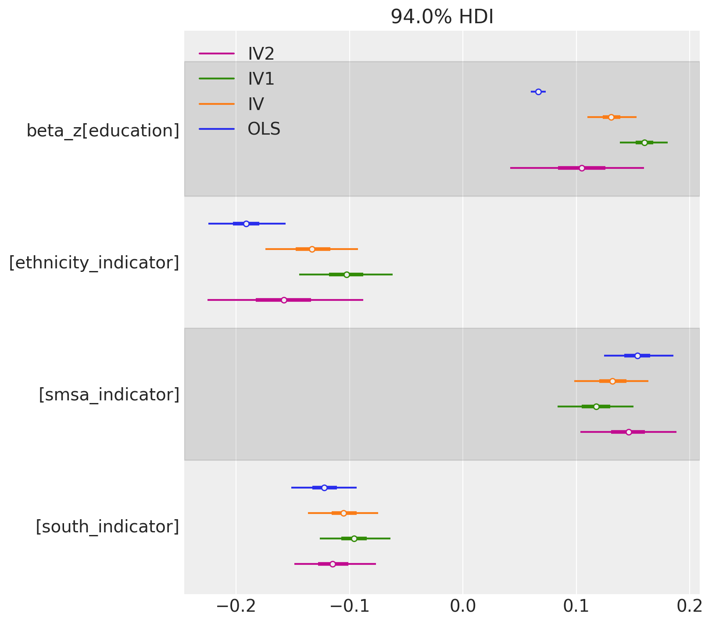
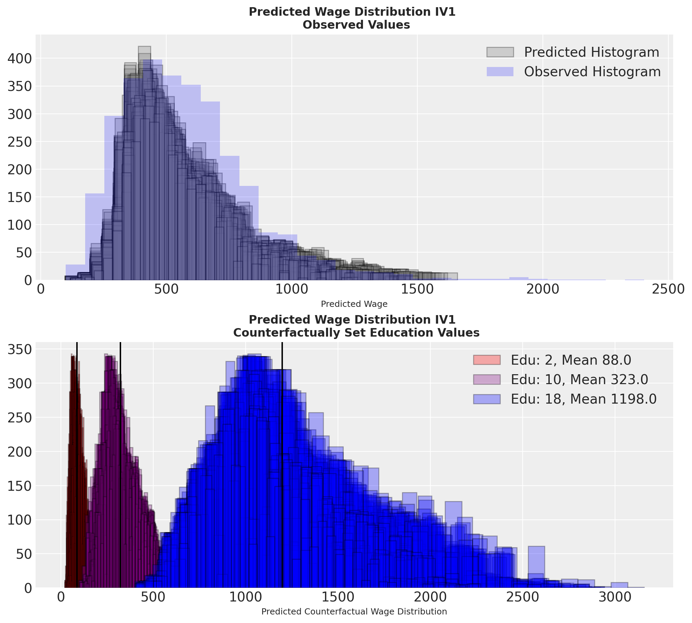
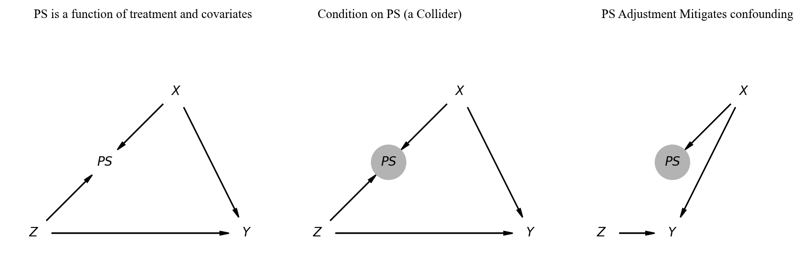
The treatment effect can be estimated cleanly \[ y \sim 1 + Z + X_1 ... X_N \] \[ p(Z) \sim X_1 ... X_N \]
Propensity score adjustments reweight our outcome by the probability of treatment \[ y \sim f(p(Z), Z)\]
df1 = pd.DataFrame(
np.random.multivariate_normal([0.5, 1], [[2, 1], [1, 1]], size=10000),
columns=["x1", "x2"],
)
df1["trt"] = np.where(
-0.5 + 0.25 * df1["x1"] + 0.75 * df1["x2"] + np.random.normal(0, 1, size=10000) > 0,
1,
0,
)
TREATMENT_EFFECT = 2
df1["outcome"] = (
TREATMENT_EFFECT * df1["trt"]
+ df1["x1"]
+ df1["x2"]
+ np.random.normal(0, 1, size=10000)
)
result1 = cp.InversePropensityWeighting(
df1,
formula="trt ~ 1 + x1 + x2",
outcome_variable="outcome",
weighting_scheme="robust",
model=cp.pymc_models.PropensityScore(
sample_kwargs={
"draws": 1000,
"target_accept": 0.95,
"random_seed": seed,
"progressbar": False,
},
),
)
result1Overfitting Propensity Score models to the sample data confounds causal inference
Balancing Covariate Distributions across Treatment Groups
Balanced covariate distributions is testable implication the propensity score design.
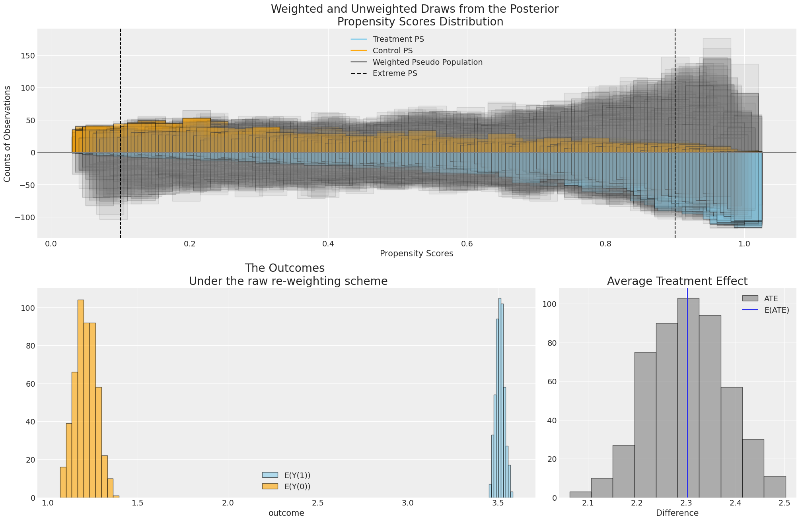
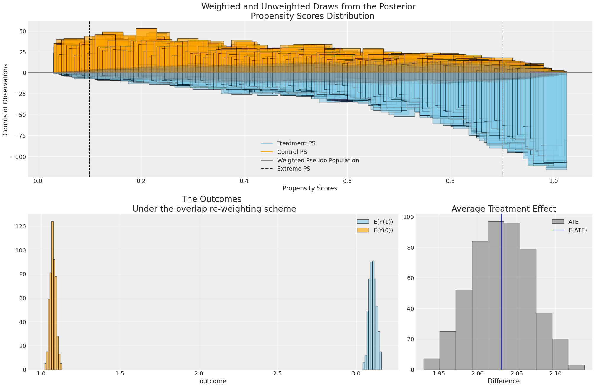
Propensity Weighting Adjusts Outcome Distribution to improve estimation of treatment effects
Causal Inference in Python